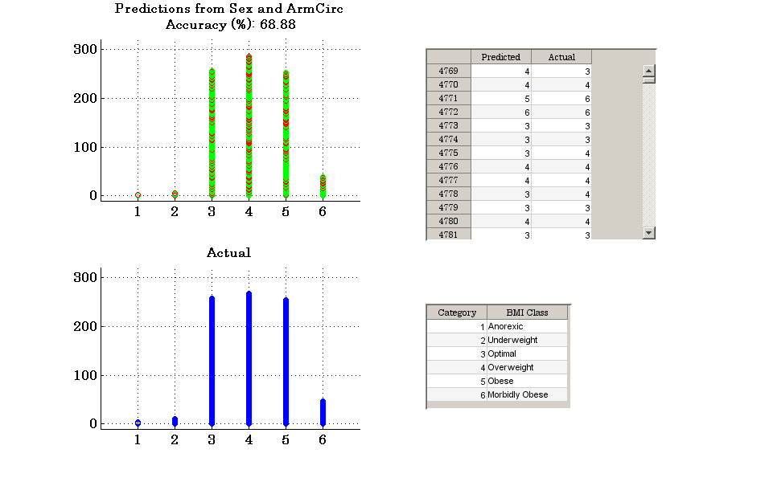

Chapter 04 - Debugging and Improving Performance.
Author: Ken Deeley, ken.deeley@mathworks.co.uk
This chapter provides techniques for maintenance, troubleshooting and debugging of MATLAB applications. We will use a variety of approaches to diagnose problems, identify common errors and evaluate code performance. We will also look at strategies for writing code with performance in mind, including vectorisation techniques and managing memory effectively in MATLAB. The idea is that we have previously developed and tested algorithms, which may now be fine-tuned to improve performance. This can be done safely in the presence of existing unit tests. A common situation for many people is to inherit code from others which may require debugging and maintenance. In this chapter there are two examples. The first example will assume that we have inherited a "black box" algorithm which we are expected to use. However, the code does not currently work, so it is necessary to debug it first. The second example will focus on vectorisation and memory management strategies to improve code performance. In this chapter we will use integrated MATLAB development tools to diagnose errors and identify potential for performance improvement. We will also write vectorised MATLAB code.
Outline:
- Tools for diagnosing errors
- Directory reports
- Breakpoints
- Tools for measuring performance
- Timing functions
- The MATLAB Profiler
- Improving performance
- Vectorisation strategies
- Vectorising operations on cells and structures
- Memory preallocation
- Efficient memory management
Reference files for this chapter:
- ../findBestPredictors.m
- ../S04_Vectorisation.m
- ../Reference/F04_*.m
- ../Reference/S04_Compact.m
- ../Reference/S04_CellData.mat
- ../Reference/S04_StructData.mat
Contents
- Course Example: Best BMI Predictors.
- Directory Reports.
- Analyzing Code in the Editor.
- Preallocation of Memory.
- Entering Debug Mode.
- Resolving Dependencies.
- Debugging Completion.
- Diagnosing Performance.
- The MATLAB Profiler.
- Vectorisation.
- Vectorising Operations on Cells and Structures.
- Memory Anatomy.
- Copy-on-Write Behaviour.
- In-Place Optimisation.
Course Example: Best BMI Predictors.
Let's assume that we have inherited code from another person. Possibly this person is another researcher in the same department, or a former work colleague, or a research supervisor. In any case, we have been left with some code that we would like to use (possibly adapt or modify for our specific needs). Unfortunately, the code does not work as it stands, so we will need to go through a debugging process to repair it.
We have a function, findBestPredictors, which is intended to identify the two best predictor variables from the medical data (excluding BMI and actual and reported height and weight) for the purpose of classifying an individual's BMI category. When working correctly, findBestPredictors should return a table of results (one observation for each pair of predictor variables) and render a visualisation of the classified data for the best pair of predictor variables.
% View the non-functional version of findBestPredictors. edit findBestPredictors % Attempt to invoke the function. try predictorRankings = findBestPredictors(); catch MExc disp(MExc.message) end % This produces an error message, so the code does not work as intended. We % need to start debugging. This chapter is intended to provide a typical % workflow a programmer may follow when debugging code.
Error: File: C:\Users\kdeeley\Desktop\MathWorks\Training\2014 Q1\02_CC01_Manchester_University_January_14th_15th\02_Files\findBestPredictors.m Line: 128 Column: 60 Unbalanced or unexpected parenthesis or bracket.
Directory Reports.
Directory reports may be used as a first step to obtain an overview of particular aspects of files in a given directory (folder). Directory reports are available from a drop-down list in the Current Folder Browser menu. Note that these reports are specific to a given directory.
As a first step, we can produce a Code Analyzer Report listing all Code Analyzer warnings for each file in the current folder. This will help us to fix syntactical and other errors present in the current code.
Recommended activity: run a Code Analyzer Report to generate a summary of all Code Analyzer warnings and errors.
Analyzing Code in the Editor.
The MATLAB Editor has various integrated tools intended for code debugging. The status box in the upper right-hand corner provides an indication of the current status of the code. Green means that there are no detectable errors in the code; orange means that there is potential for unexpected results or poor performance, and red means that there are errors which currently will prevent the code from running.
A summary of the code issues can be obtained from the Code Analyzer Report as described above. This analysis can also be done programmatically using the CHECKCODE function:
checkcode('findBestPredictors') % Recommended activity: understand, diagnose and fix all warnings % identified from the Code Analyzer Report (or obtained via the CHECKCODE % function). This will require knowledge of preallocation (see the % following section for more information). The functions CELL and NCHOOSEK % may come in useful here. % % See the file F04_findBestPredictors_V1.
L 85 (C 33-40): The function 'getPairs' might be unused. L 94 (C 9-11): FOR might not be aligned with its matching END (line 98). L 95 (C 13-20): The variable 'varPairs' appears to change size on every loop iteration. Consider preallocating for speed. L 96 (C 13-20): The variable 'varPairs' appears to change size on every loop iteration. Consider preallocating for speed. L 97 (C 15): Terminate statement with semicolon to suppress output (in functions). L 128 (C 60): Invalid syntax at ';'. Possibly, a ), }, or ] is missing.
Preallocation of Memory.
MATLAB allows variables to be resized dynamically, for example, during the individual iterations of a loop. This is convenient, but in some cases can lead to poor performance. Preallocating memory in advance is the recommended approach. For numeric arrays, preallocation can be done using the zeros/ones/NaN function. Note that it is important to preallocate for the correct data type. All numeric data types are supported by zeros and ones; NaN may initialise double or single values. Cells and structures may be preallocated using the cell, struct and repmat functions.
Entering Debug Mode.
Now that we have fixed all of the existing Code Analyzer warnings, we might hope that the code now runs as expected.
try predictorRankings = F04_findBestPredictors_V1(); %#ok<*NASGU> catch MExc disp(MExc.identifier) end % It doesn't, which is not that surprising. The Code Analyzer only performs % a static check of the code; it is unable to detect run-time errors. Many % run-time errors are most easily debugged by viewing the workspace of the % function during execution. In MATLAB, this can be achieved by entering % debug mode. If we want to enter debug mode automatically in the presence % of an error, use the following command: dbstop if error % This can be cleared using: dbclear if error % Breakpoints may also be inserted manually in the MATLAB Editor by % clicking on the small dash beside each line of code. Conditional % breakpoints may be set by modifying the breakpoint using the right-click % menu. This enables the programmer to enter debug mode only when a certain % condition is satisfied. % % Recommended activity: diagnose the run-time problems with LOAD and % accessing structure fields. How can we repair them and prevent similar % errors from occurring in the future? (The EXIST and ISFIELD functions may % be useful here.) % % See the file F04_findBestPredictors_V2 for a version of the code which % fixes the first two run-time errors involving LOAD and accessing % structure fields.
MATLAB:load:couldNotReadFile
Resolving Dependencies.
Many applications, especially larger applications, consist of multiple functions and code files. These functions may call each other, as well as other MATLAB or toolbox functions. Resolving all dependencies can be challenging. If we try to call our function at this stage, we are faced with a dependency problem:
try predictorRankings = F04_findBestPredictors_V2(); catch MExc disp(MExc.identifier) end % Note that the WHICH command can help us determine which function or % variable is being referenced in a given command: which F04_findBestPredictors_V2 which getpairs in F04_findBestPredictors_V2 which getPairs in F04_findBestPredictors_V2 % Running a Dependency Report on the directory may also help to diagnose % and resolve the "undefined function" error we obtained above. % % Recommended activity: run a Dependency Report on the directory to % understand the dependency problem. Fix the problem. % % See the file F04_findBestPredictors_V3 for reference.
MATLAB:UndefinedFunction c:\Users\kdeeley\Desktop\MathWorks\Training\2014 Q1\02_CC01_Manchester_University_January_14th_15th\02_Files\InstructorMaterials\F04_findBestPredictors_V2.m 'getpairs' not found. c:\Users\kdeeley\Desktop\MathWorks\Training\2014 Q1\02_CC01_Manchester_University_January_14th_15th\02_Files\InstructorMaterials\F04_findBestPredictors_V2.m (getPairs) % Subfunction of F04_findBestPredictors_V2
Debugging Completion.
After fixing the dependency problem, we now have a function that works.
predictorRankings = F04_findBestPredictors_V3();
Accuracy for predictors ArmCirc and Age (%): 59.62 Accuracy for predictors ArmLength and Age (%): 32.07 Accuracy for predictors ArmLength and ArmCirc (%): 65.20 Accuracy for predictors BPDias1 and Age (%): 33.37 Accuracy for predictors BPDias1 and ArmCirc (%): 58.79 Accuracy for predictors BPDias1 and ArmLength (%): 30.17 Accuracy for predictors BPDiff and Age (%): 32.54 Accuracy for predictors BPDiff and ArmCirc (%): 57.96 Accuracy for predictors BPDiff and ArmLength (%): 31.35 Accuracy for predictors BPDiff and BPDias1 (%): 31.47 Accuracy for predictors BPSyst1 and Age (%): 33.73 Accuracy for predictors BPSyst1 and ArmCirc (%): 55.82 Accuracy for predictors BPSyst1 and ArmLength (%): 34.92 Accuracy for predictors BPSyst1 and BPDias1 (%): 30.88 Accuracy for predictors BPSyst1 and BPDiff (%): 31.00 Accuracy for predictors Ethnicity and Age (%): 30.17 Accuracy for predictors Ethnicity and ArmCirc (%): 62.59 Accuracy for predictors Ethnicity and ArmLength (%): 37.65 Accuracy for predictors Ethnicity and BPDias1 (%): 36.22 Accuracy for predictors Ethnicity and BPDiff (%): 32.66 Accuracy for predictors Ethnicity and BPSyst1 (%): 35.99 Accuracy for predictors LegLength and Age (%): 32.66 Accuracy for predictors LegLength and ArmCirc (%): 64.01 Accuracy for predictors LegLength and ArmLength (%): 33.97 Accuracy for predictors LegLength and BPDias1 (%): 28.74 Accuracy for predictors LegLength and BPDiff (%): 27.43 Accuracy for predictors LegLength and BPSyst1 (%): 28.03 Accuracy for predictors LegLength and Ethnicity (%): 31.12 Accuracy for predictors LikeToWeigh and Age (%): 40.02 Accuracy for predictors LikeToWeigh and ArmCirc (%): 67.81 Accuracy for predictors LikeToWeigh and ArmLength (%): 45.49 Accuracy for predictors LikeToWeigh and BPDias1 (%): 49.52 Accuracy for predictors LikeToWeigh and BPDiff (%): 46.56 Accuracy for predictors LikeToWeigh and BPSyst1 (%): 46.56 Accuracy for predictors LikeToWeigh and Ethnicity (%): 49.17 Accuracy for predictors LikeToWeigh and LegLength (%): 42.28 Accuracy for predictors Overweight and Age (%): 42.40 Accuracy for predictors Overweight and ArmCirc (%): 68.76 Accuracy for predictors Overweight and ArmLength (%): 46.91 Accuracy for predictors Overweight and BPDias1 (%): 49.52 Accuracy for predictors Overweight and BPDiff (%): 47.15 Accuracy for predictors Overweight and BPSyst1 (%): 48.69 Accuracy for predictors Overweight and Ethnicity (%): 50.24 Accuracy for predictors Overweight and LegLength (%): 44.89 Accuracy for predictors Overweight and LikeToWeigh (%): 51.54 Accuracy for predictors Pulse and Age (%): 30.88 Accuracy for predictors Pulse and ArmCirc (%): 56.89 Accuracy for predictors Pulse and ArmLength (%): 30.52 Accuracy for predictors Pulse and BPDias1 (%): 29.57 Accuracy for predictors Pulse and BPDiff (%): 32.54 Accuracy for predictors Pulse and BPSyst1 (%): 32.66 Accuracy for predictors Pulse and Ethnicity (%): 36.22 Accuracy for predictors Pulse and LegLength (%): 31.12 Accuracy for predictors Pulse and LikeToWeigh (%): 47.03 Accuracy for predictors Pulse and Overweight (%): 48.22 Accuracy for predictors Sex and Age (%): 33.37 Accuracy for predictors Sex and ArmCirc (%): 68.88 Accuracy for predictors Sex and ArmLength (%): 34.80 Accuracy for predictors Sex and BPDias1 (%): 34.68 Accuracy for predictors Sex and BPDiff (%): 33.14 Accuracy for predictors Sex and BPSyst1 (%): 38.48 Accuracy for predictors Sex and Ethnicity (%): 36.94 Accuracy for predictors Sex and LegLength (%): 34.32 Accuracy for predictors Sex and LikeToWeigh (%): 49.17 Accuracy for predictors Sex and Overweight (%): 51.19 Accuracy for predictors Sex and Pulse (%): 34.56 Accuracy for predictors Subscapular and Age (%): 43.11 Accuracy for predictors Subscapular and ArmCirc (%): 63.78 Accuracy for predictors Subscapular and ArmLength (%): 42.40 Accuracy for predictors Subscapular and BPDias1 (%): 40.97 Accuracy for predictors Subscapular and BPDiff (%): 38.72 Accuracy for predictors Subscapular and BPSyst1 (%): 38.36 Accuracy for predictors Subscapular and Ethnicity (%): 42.40 Accuracy for predictors Subscapular and LegLength (%): 42.40 Accuracy for predictors Subscapular and LikeToWeigh (%): 43.59 Accuracy for predictors Subscapular and Overweight (%): 46.79 Accuracy for predictors Subscapular and Pulse (%): 39.67 Accuracy for predictors Subscapular and Sex (%): 46.08 Accuracy for predictors Triceps and Age (%): 38.00 Accuracy for predictors Triceps and ArmCirc (%): 65.44 Accuracy for predictors Triceps and ArmLength (%): 42.16 Accuracy for predictors Triceps and BPDias1 (%): 37.29 Accuracy for predictors Triceps and BPDiff (%): 39.79 Accuracy for predictors Triceps and BPSyst1 (%): 40.62 Accuracy for predictors Triceps and Ethnicity (%): 39.07 Accuracy for predictors Triceps and LegLength (%): 38.24 Accuracy for predictors Triceps and LikeToWeigh (%): 50.00 Accuracy for predictors Triceps and Overweight (%): 50.59 Accuracy for predictors Triceps and Pulse (%): 37.89 Accuracy for predictors Triceps and Sex (%): 48.46 Accuracy for predictors Triceps and Subscapular (%): 39.79 Accuracy for predictors Waist and Age (%): 64.01 Accuracy for predictors Waist and ArmCirc (%): 67.46 Accuracy for predictors Waist and ArmLength (%): 64.85 Accuracy for predictors Waist and BPDias1 (%): 62.00 Accuracy for predictors Waist and BPDiff (%): 61.05 Accuracy for predictors Waist and BPSyst1 (%): 59.38 Accuracy for predictors Waist and Ethnicity (%): 63.54 Accuracy for predictors Waist and LegLength (%): 64.13 Accuracy for predictors Waist and LikeToWeigh (%): 66.86 Accuracy for predictors Waist and Overweight (%): 65.20 Accuracy for predictors Waist and Pulse (%): 63.30 Accuracy for predictors Waist and Sex (%): 65.20 Accuracy for predictors Waist and Subscapular (%): 66.75 Accuracy for predictors Waist and Triceps (%): 66.51
Diagnosing Performance.
This is good news - we can get started using this function for our own needs. However, as well as debugging code to remove errors, it is also good practice to investigate performance aspects of the code. Just because code works and gives the correct results, it does not mean that it cannot be improved by refactoring.
Options for evaluating code performance include the following techniques.
- The tic/toc stopwatch timing functions provide the total system time elapsed between commands. Use this technique to time small blocks of code (not complete functions).
- The timeit function provides an accurate estimate of the time required to run a function. This works by repeatedly calling the function and estimating an average run time based on known behaviour of MATLAB function invocation.
- Using the MATLAB Profiler (see the next section).
The MATLAB Profiler.
The MATLAB Profiler is intended to provide a more in-depth breakdown of the time spent executing code. It produces a fully hyperlinked HTML report which details the number of calls, the total time and the self time for each function. Using the profiler results can help to identify bottlenecks in code performance.
Recommended activity: open the profiler and profile the working version of findBestPredictors.
profile on predictorRankings = F04_findBestPredictors_V3(); profile off profile viewer % Identify potential code bottlenecks using the profile results. Reorganise % the update of the uitable data in the local visualisation function, by % removing the get/set commands and performing the data update only once, % at the end of the loop. % % See the file F04_findBestPredictors_Final for reference. % % At this point, we have now completed a sample workflow for debugging and % performance-tuning a MATLAB application. In the remainder of the chapter % we will discuss additional techniques for improving performance of code, % focussing on vectorisation and memory management.
Accuracy for predictors ArmCirc and Age (%): 59.62 Accuracy for predictors ArmLength and Age (%): 32.07 Accuracy for predictors ArmLength and ArmCirc (%): 65.20 Accuracy for predictors BPDias1 and Age (%): 33.37 Accuracy for predictors BPDias1 and ArmCirc (%): 58.79 Accuracy for predictors BPDias1 and ArmLength (%): 30.17 Accuracy for predictors BPDiff and Age (%): 32.54 Accuracy for predictors BPDiff and ArmCirc (%): 57.96 Accuracy for predictors BPDiff and ArmLength (%): 31.35 Accuracy for predictors BPDiff and BPDias1 (%): 31.47 Accuracy for predictors BPSyst1 and Age (%): 33.73 Accuracy for predictors BPSyst1 and ArmCirc (%): 55.82 Accuracy for predictors BPSyst1 and ArmLength (%): 34.92 Accuracy for predictors BPSyst1 and BPDias1 (%): 30.88 Accuracy for predictors BPSyst1 and BPDiff (%): 31.00 Accuracy for predictors Ethnicity and Age (%): 30.17 Accuracy for predictors Ethnicity and ArmCirc (%): 62.59 Accuracy for predictors Ethnicity and ArmLength (%): 37.65 Accuracy for predictors Ethnicity and BPDias1 (%): 36.22 Accuracy for predictors Ethnicity and BPDiff (%): 32.66 Accuracy for predictors Ethnicity and BPSyst1 (%): 35.99 Accuracy for predictors LegLength and Age (%): 32.66 Accuracy for predictors LegLength and ArmCirc (%): 64.01 Accuracy for predictors LegLength and ArmLength (%): 33.97 Accuracy for predictors LegLength and BPDias1 (%): 28.74 Accuracy for predictors LegLength and BPDiff (%): 27.43 Accuracy for predictors LegLength and BPSyst1 (%): 28.03 Accuracy for predictors LegLength and Ethnicity (%): 31.12 Accuracy for predictors LikeToWeigh and Age (%): 40.02 Accuracy for predictors LikeToWeigh and ArmCirc (%): 67.81 Accuracy for predictors LikeToWeigh and ArmLength (%): 45.49 Accuracy for predictors LikeToWeigh and BPDias1 (%): 49.52 Accuracy for predictors LikeToWeigh and BPDiff (%): 46.56 Accuracy for predictors LikeToWeigh and BPSyst1 (%): 46.56 Accuracy for predictors LikeToWeigh and Ethnicity (%): 49.17 Accuracy for predictors LikeToWeigh and LegLength (%): 42.28 Accuracy for predictors Overweight and Age (%): 42.40 Accuracy for predictors Overweight and ArmCirc (%): 68.76 Accuracy for predictors Overweight and ArmLength (%): 46.91 Accuracy for predictors Overweight and BPDias1 (%): 49.52 Accuracy for predictors Overweight and BPDiff (%): 47.15 Accuracy for predictors Overweight and BPSyst1 (%): 48.69 Accuracy for predictors Overweight and Ethnicity (%): 50.24 Accuracy for predictors Overweight and LegLength (%): 44.89 Accuracy for predictors Overweight and LikeToWeigh (%): 51.54 Accuracy for predictors Pulse and Age (%): 30.88 Accuracy for predictors Pulse and ArmCirc (%): 56.89 Accuracy for predictors Pulse and ArmLength (%): 30.52 Accuracy for predictors Pulse and BPDias1 (%): 29.57 Accuracy for predictors Pulse and BPDiff (%): 32.54 Accuracy for predictors Pulse and BPSyst1 (%): 32.66 Accuracy for predictors Pulse and Ethnicity (%): 36.22 Accuracy for predictors Pulse and LegLength (%): 31.12 Accuracy for predictors Pulse and LikeToWeigh (%): 47.03 Accuracy for predictors Pulse and Overweight (%): 48.22 Accuracy for predictors Sex and Age (%): 33.37 Accuracy for predictors Sex and ArmCirc (%): 68.88 Accuracy for predictors Sex and ArmLength (%): 34.80 Accuracy for predictors Sex and BPDias1 (%): 34.68 Accuracy for predictors Sex and BPDiff (%): 33.14 Accuracy for predictors Sex and BPSyst1 (%): 38.48 Accuracy for predictors Sex and Ethnicity (%): 36.94 Accuracy for predictors Sex and LegLength (%): 34.32 Accuracy for predictors Sex and LikeToWeigh (%): 49.17 Accuracy for predictors Sex and Overweight (%): 51.19 Accuracy for predictors Sex and Pulse (%): 34.56 Accuracy for predictors Subscapular and Age (%): 43.11 Accuracy for predictors Subscapular and ArmCirc (%): 63.78 Accuracy for predictors Subscapular and ArmLength (%): 42.40 Accuracy for predictors Subscapular and BPDias1 (%): 40.97 Accuracy for predictors Subscapular and BPDiff (%): 38.72 Accuracy for predictors Subscapular and BPSyst1 (%): 38.36 Accuracy for predictors Subscapular and Ethnicity (%): 42.40 Accuracy for predictors Subscapular and LegLength (%): 42.40 Accuracy for predictors Subscapular and LikeToWeigh (%): 43.59 Accuracy for predictors Subscapular and Overweight (%): 46.79 Accuracy for predictors Subscapular and Pulse (%): 39.67 Accuracy for predictors Subscapular and Sex (%): 46.08 Accuracy for predictors Triceps and Age (%): 38.00 Accuracy for predictors Triceps and ArmCirc (%): 65.44 Accuracy for predictors Triceps and ArmLength (%): 42.16 Accuracy for predictors Triceps and BPDias1 (%): 37.29 Accuracy for predictors Triceps and BPDiff (%): 39.79 Accuracy for predictors Triceps and BPSyst1 (%): 40.62 Accuracy for predictors Triceps and Ethnicity (%): 39.07 Accuracy for predictors Triceps and LegLength (%): 38.24 Accuracy for predictors Triceps and LikeToWeigh (%): 50.00 Accuracy for predictors Triceps and Overweight (%): 50.59 Accuracy for predictors Triceps and Pulse (%): 37.89 Accuracy for predictors Triceps and Sex (%): 48.46 Accuracy for predictors Triceps and Subscapular (%): 39.79 Accuracy for predictors Waist and Age (%): 64.01 Accuracy for predictors Waist and ArmCirc (%): 67.46 Accuracy for predictors Waist and ArmLength (%): 64.85 Accuracy for predictors Waist and BPDias1 (%): 62.00 Accuracy for predictors Waist and BPDiff (%): 61.05 Accuracy for predictors Waist and BPSyst1 (%): 59.38 Accuracy for predictors Waist and Ethnicity (%): 63.54 Accuracy for predictors Waist and LegLength (%): 64.13 Accuracy for predictors Waist and LikeToWeigh (%): 66.86 Accuracy for predictors Waist and Overweight (%): 65.20 Accuracy for predictors Waist and Pulse (%): 63.30 Accuracy for predictors Waist and Sex (%): 65.20 Accuracy for predictors Waist and Subscapular (%): 66.75 Accuracy for predictors Waist and Triceps (%): 66.51
Vectorisation.
MATLAB is an array-based language, and as such all vector and matrix operations are optimised for performance. Replacing sequences of scalar operations performed in loops with smaller numbers of vector and matrix operations is referred to as vectorisation. This process can lead to more readable and efficient code.
Again, let's assume that we have been handed some code written by someone else. We are now interested in improving its performance and readability, given that we have been through the debugging and profiling stages to remove errors and more obvious bottlenecks.
edit S04_Vectorisation % Recommended activity: vectorise the code in the first section of % calculations by using standard mathematical operations. Next, use % standard table functionality (VARFUN) to vectorise common mathematical % and statistical operations on tabular data. % % See the file S04_Compact for reference here.
Vectorising Operations on Cells and Structures.
There are situations when working with cell and structure arrays when it becomes necessary to apply a function to the contents of each cell or structure field. In this situation, it is possible to vectorise the operations using CELLFUN or STRUCTFUN.
Recommended activity: vectorise the code in the remaining sections of the S04_Vectorisation medical data calculation script using CELLFUN and STRUCTFUN.
See the file S04_Compact for reference here.
Memory Anatomy.
On a Windows system, the MEMORY command can be used to obtain available memory information. Calling the MEMORY function with two outputs produces two structures which contain user and system information, respectively.
[user, sys] = memory; disp(user) disp(sys)
MaxPossibleArrayBytes: 9.5969e+09
MemAvailableAllArrays: 9.5969e+09
MemUsedMATLAB: 1.6609e+09
VirtualAddressSpace: [1x1 struct]
SystemMemory: [1x1 struct]
PhysicalMemory: [1x1 struct]
Copy-on-Write Behaviour.
When assigning one variable to another, MATLAB does not create a copy of that variable until it is necessary. Instead, it creates a reference. A copy is made only when code modifies one or more values in the reference variable. This behaviour is known as copy-on-write behaviour and is designed to avoid making copies of large arrays unless it is necessary. For example:
clear A = rand(6e3); m = memory; disp('Memory available (GB):') disp(m.MemAvailableAllArrays/1073741824) B = A; % This is only a reference at the moment, so available memory should % remain constant. m = memory; disp('Memory available (GB):') disp(m.MemAvailableAllArrays/1073741824) B(1, 1) = 0; % Now that we have made a change, copy-on-write should kick-in. m = memory; disp('Memory available (GB):') disp(m.MemAvailableAllArrays/1073741824)
Memory available (GB):
8.6786
Memory available (GB):
8.6786
Memory available (GB):
8.4098
In-Place Optimisation.
An in-place optimisation conserves memory by using the same variable for an output argument as for an input argument. This is valid only when the input and output have the same size and type, and only within functions. When working on large data and memory is a concern, in-place optimisations could be used to attempt to conserve memory use. However, in some situations, it is not possible to have a true in-place optimisation, because some temporary storage is necessary to perform the operation.
Recommended activity: open and explain the inPlaceExample function. See the reference file "inPlaceExample".
inPlaceExample()
Memory available after creating large array (GB):
8.2415
Memory available inside the not in-place function (GB):
8.0823
Memory available after calling the not in-place function (GB):
8.2508
Memory available inside the in-place function (GB):
8.2508
Memory available after calling the in-place function (GB):
8.2508